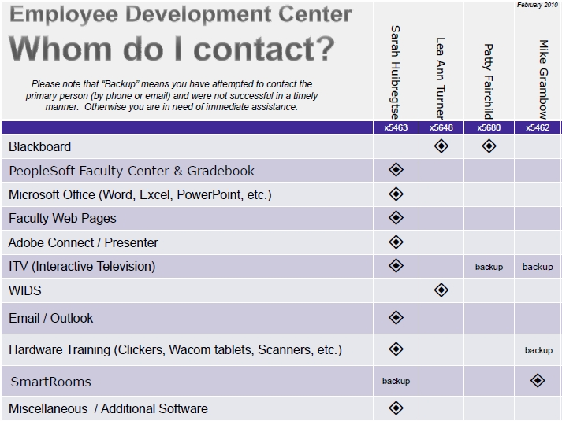

|
Employee Development Center The Employee Development Center is responsible for new and emerging instructional technologies and training activities in a wide range of technology-related subjects to faculty and staff for professional development. Areas of responsibility include:
|
|||||||||
The Source Employee Development Staff
Sarah HuibregtseInstructional Technology Coordinator
715.422.5463
sarah.huibregtse@mstc.edu
Lea Ann Turner
Learning Technology Manager
715.422.5480
leaann.turner@mstc.edu
Patty Fairchild
Director of College Advancement
715.422.5535
patty.fairchild@mstc.edu
